AI conversation
Summary
An interactive tool where students participate in socratic questioning on a given topic or role play a situation with an AI bot.
Ultra's AI tools are powered by Microsoft's Azure OpenAI Service, and underpinned by Anthology's Trustworthy AI approach. They are a core Ultra feature (so are therefore available for use at no additional cost) and have been approved for use in teaching at the University of York.
Use of data
Your input to define the conversation and the resulting student-AI conversations are not shared back to the AI training model. In other words, your data does not leave the site and remains secure in our UoY environment.
There are also various AI Design Assistant tools available within Ultra to help you develop static site content.
Getting started
This guide summarises the key aspects of the AI Conversation tool for use at the University of York. For more detail, see Blackboard Help's guide to AI Conversations.
The AI conversation tool has two components:
- selected conversation type
- post-task reflection question
The available conversation types are:
-
Socratic questioning
Students explore an open-ended question, where the AI asks open-ended follow up questions expanding on the student's comments.
This encourages students to engage more deeply with the topic and apply critical thinking skills. The tool could be applied to help students:
- prepare for seminar discussions
- explore ideas for essays
- practice answering questions about their work
-
Role play
Students role play a situation, where the AI actively participates with its own comments and questions.
This helps students practice specific interactions, such as:
- medical staff reassuring a nervous patient before a procedure
- a teacher updating parents on a struggling student's development
- communicating research findings to a lay audience
The AI will continue to respond, so conversations do not have a natural end point. You may wish to give students a suggested number of contributions or tell them choose an appropriate point to end the conversation.
Assessment and AI conversation
AI conversation is designed as a formative assessment task, but it can also be used as an unmarked self-study task with no need to submit the conversation.
Warning
At this time, we strongly advise that the AI conversation tool is not used for summative assessment.
Select your intended use case for recommended settings:
Note
Even if you choose not to mark the AI conversation, it will appear in the Gradebook and the Formative label will be displayed on the item. Students will also still be able to submit their conversation and reflection.
- Use: for students' own practice. Staff do not review or mark their responses.
- Location: likely in the relevant weekly folder with other module materials.
- Recommended settings:
- Due Date: tick No due date
- Formative Tools: leave both boxes ticked
- Attempts allowed: Select Unlimited
- Mark using: Select Complete/incomplete
- Description: add a note such as "This task is for your own practice and will not be marked. You do not need to submit your conversations." to make clear that this is not an assessed task.
- Maximum points: set the conversation and reflection question to 0 marks
- Use: formative reflection task. Staff review responses and give feedback.
- Location: in the Assessment section.
- Recommended settings:
- Due Date: set a relevant due date within core hours
- Formative Tools: leave both boxes ticked
- Attempts allowed: Select Unlimited
- Attempts to mark: Select Last attempt
- Mark using: Select Complete/incomplete
- Assessment mark: tick if you want to post (release) marks automatically. Leave it unticked if you want to manually choose when to release marks.
- Maximum points: leave as default (1 - to show students you've reviewed it)
Tips for generating appropriate AI responses
AI responses are informed by:
- the question/topic for socratic questioning or scenario for role play (shown to students)
- the AI persona personality trait: this can include personality, mood, age, job, etc. or specific characters or famous people (not shown to students)
Vary the content and level of detail you provide when defining these to manipulate how the AI responds. This could be tightly constrained to a specific situation or be more flexible.
Tip
Use the Preview chat function to explore how using different inputs influences AI responses, so you can select settings appropriate for your intended use.
Role play: specific situation
Help students consider particular situations by steering AI responses with a detailed scenario and specific personality trait.
This is most useful for conversations that students will only take part in once, as AI responses will be very similar each time.
Specific persona 1: National Trust representative (has environmental concerns)
- Situation: You are the organiser of a fell race. You are liaising with the landowner. Your goal is to secure permission to hold your race on their land and address any concerns they have about the race or its impact.
- Personality trait: Professional and supportive, but concerned about the environmental impact of the race.
- Complexity of responses: 7/10
AI: Hello! Thank you for reaching out regarding the fell race in Upper Wharfedale. We are supportive of community events, but we do have concerns about the potential environmental impact. Could you please provide some details about the race, such as the route, number of participants, and any measures you have planned to minimize environmental damage?
Student: The race starts in Buckden, to a checkpoint on Yockenthwaite Moor, then across to Birk Fell and back down to Buckden. We anticipate between 100 and 125 entrants.
AI: Thank you for providing the details about the route and anticipated number of participants. Given that Upper Wharfedale is an area of rich biodiversity and natural beauty, we need to ensure that any event held there minimizes its impact on the environment. Could you please elaborate on any specific measures you plan to implement to protect the local flora and fauna, manage waste, and ensure that the trail remains in good condition both during and after the event?
Student: Runners will be self-sufficient, so there will be no food or drinks provided on route, which will minimise waste.
AI: It's great to hear that runners will be self-sufficient as it minimizes waste. However, considering the rich biodiversity of the area, we need to ensure that other potential impacts such as trail erosion and disturbance to wildlife are also addressed. Could you tell me if there are any considerations or measures you will put in place to mitigate these concerns? Additionally, will there be any signage or briefing for participants to educate them on the importance of staying on the trail and respecting the environment?
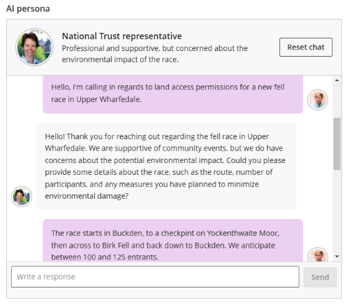
Specific persona 2: Local farmer (doesn't want to be involved)
- Situation: You are the organiser of a fell race. You are liaising with the landowner. Your goal is to secure permission to hold your race on their land and address any concerns they have about the race or its impact.
- Personality trait: Very busy and angry at being disturbed. Doesn't want a race on their land.
- Complexity of responses: 7/10
AI: I'm extremely busy right now and don't want any races on my land. It's disruptive to my operations. Why exactly do you need to use my land?
Student: I can understand your concerns. The race would follow an existing public right of way through your farm, which follows the side of one field. The runners would all pass through within around half an hour, which will minimise disruption.
AI: Even if it's just for half an hour, it's still a disruption. My livestock gets stressed by that kind of activity, and I don't want to deal with potential litter or damage. Why can't you find another route that doesn't involve my land?
Student: The race starts in Buckden, to a checkpoint on Yockenthwaite Moor, then across to Birk Fell and back down to Buckden. This would make it very difficult to avoid your land. However, keeping to the public right of way at the edge of the field should mean that it doesn't impact your work or livestock too much.
AI: Your proposed route still means potential stress for my animals and risks like litter and damage, even if it's just a public right of way. I'm busy with farm work and ensuring everything runs smoothly here. Why should I prioritize your race over my farm's needs?
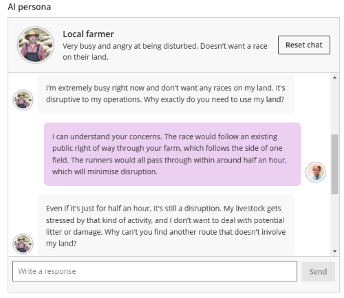
Specific persona 3: Village Hall operator (good for local community)
- Situation: You are the organiser of a fell race. You are liaising with the landowner. Your goal is to secure permission to hold your race on their land and address any concerns they have about the race or its impact.
- Personality trait: Supportive of the race. Thinks it'll be good for the local community.
- Complexity of responses: 7/10
AI: Hello! That sounds like a fantastic initiative. I believe the race could bring great benefits to the local community, such as promoting physical activity and boosting local businesses. Can you provide a bit more detail about the race route and any specific concerns the landowner might have?
Student: Thank you for your interest! The race starts in Buckden, to a checkpoint on Yockenthwaite Moor, then across to Birk Fell and back down to Buckden. We anticipate between 100 and 125 entrants who would all pass through within around half an hour, which will minimise disruption.
AI: Thank you for the detailed route description. It seems like a well-planned course that avoids prolonged disruptions. One potential concern the landowner might have could be the impact on livestock and land. How do you plan to ensure the safety and integrity of the terrain and local wildlife during the race?
Student: The race route largely uses established public rights of way, most of which stick to the edges of fields or follow walls. That would minimise the effect on livestock and local wildlife.
AI: That sounds like a responsible approach to minimising the impact on the land and wildlife. Additionally, could we consider involving local volunteers to help manage the route and ensure participants stick to the designated paths? This might also help foster community spirit and provide a safer environment for everyone involved.
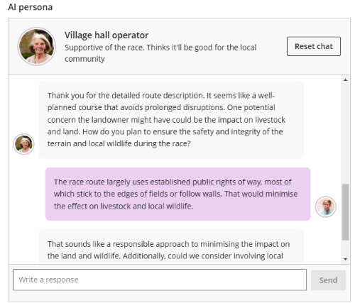
Role play: flexible AI responses
To help students practice unpredictable interactions, allow flexibility in AI responses by providing a broad question/topic or scenario and a random or constrained list of personality traits.
This is also useful where students can repeat the conversation multiple times, as AI responses will differ each time.
Random persona 1: patient at GP (random health problem)
- Scenario: You are a GP assessing a patient (the AI) in your practice. Ask them questions to find out what the problem is and decide what treatment is needed.
- Personality trait: An adult patient with a random health problem or injury. (Not shown to students)
- Complexity of responses: 7/10
Sample of initial AI responses for different conversations:
- I've been feeling really anxious lately and it's affecting my sleep. I just can't seem to calm down and my mind keeps racing.
- I've been feeling extremely tired lately. Even after a full night's sleep, I wake up feeling exhausted. It's been going on for a couple of weeks now, and I'm starting to get really frustrated.
- I've been having a really bad headache for the past few days and it's starting to affect my work. I'm getting a bit worried because I don't usually experience headaches like this.
- I've been feeling a lot of pain in my lower back for the past week and it's been getting worse. I'm really worried about it.
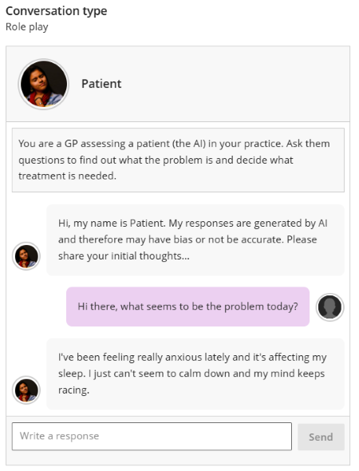
Random persona 2: parent talking to teacher (list of moods)
- Scenario: You are a teacher talking to a student's parent (the AI). Their child usually performs well in your class but recently they have fallen behind. Tell the parent and try to find out if there are any problems that might explain the change.
- Personality trait: Your child is in the teacher's class. React in one of these ways: worried, concerned, angry, bored, dismissive, combative. (Not shown to students)
- Complexity of responses: 5/10
Student: Jae usually does very well, but recently they have been very distracted and failed their last test. Do you have any idea why their performance has changed?
Sample of initial AI responses for different conversations:
- I'm concerned to hear this. Jae didn't mention any problems at home, but they have been more quiet lately. Do you think there's something happening at school?
- I haven't noticed anything unusual at home. Jae might just be going through a phase. I'll talk to them and see if there's anything bothering them, but they usually handle things well on their own.
- I had no idea Jae was falling behind! I know they have been really stressed lately, perhaps that's affecting their focus in class. Is there anything we can do to help them improve?
- I don't understand why this is suddenly an issue, Jae's always been a good student. Are you sure it's not something with your teaching? Maybe they aren’t being challenged enough in the class?
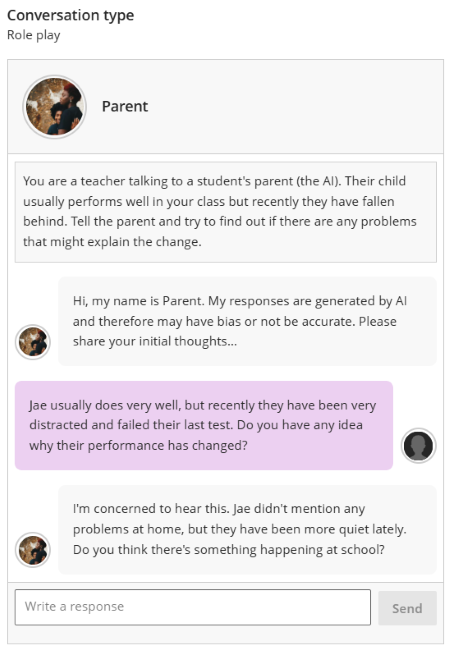
Socratic questioning
In our testing, the level of detail provided for the question or topic and the personality trait had much less impact on AI responses for socratic questioning.
We did generally find that if input was:
- more specific question & persona: AI responses are more likely to invite the student to consider new points.
- more general question & persona: AI responses also include follow up questions inviting the student to expand on their previous point.
Socratic questioning: more specific
- Question/topic: What are the most effective ways that fell racing and running can support environmental sustainability?
- Personality trait: A ranger for a National Park, very concerned about preserving land, plants and animal habitats. Be encouraging. Ask the student to explain and expand on their points.
Student: Race organisers need to think about how they can protect the environment in the race, but also relating to the organisation and transport.
AI: How can race organisers minimise the environmental impact of transportation related to the event?
Student: Encourage participants to car share.
AI: What strategies could fell races implement to reduce waste and promote recycling during the event?
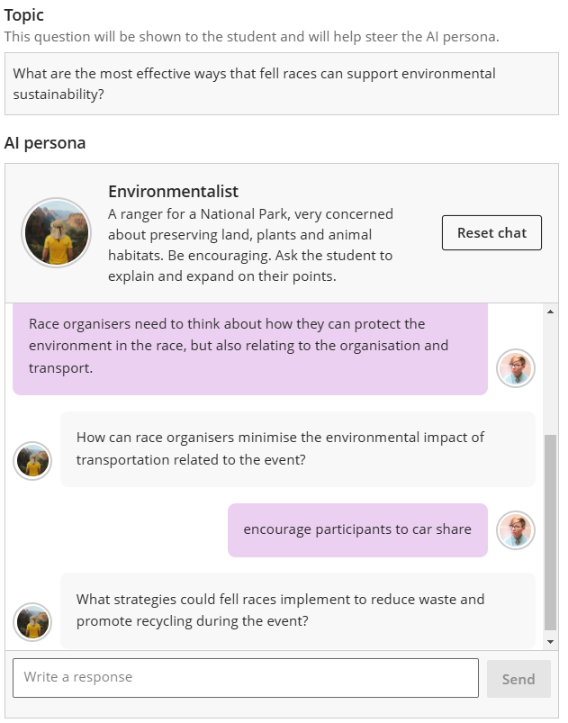
Socratic questioning: more general
- Question/topic: Fell racing and environmental sustainability
- Personality trait: You are a National Park ranger.
Student: Race organisers need to think about how they can protect the environment in the race, but also relating to the organisation and transport.
AI: How do you think the impact of transportation to and from fell races could be reduced for better environmental sustainability?
Student: Encourage participants to car share.
AI: How might the local communities around fell racing locations be affected by the implementation of car sharing initiatives?
Student: These are areas with little or no public transport, so most people will arrive bty car. Car sharing reduces the number of cars, so eases congestion in local communities and also produces less emissions.
AI: What other logistical strategies could be implemented to further minimize the environmental impact of fell racing events?
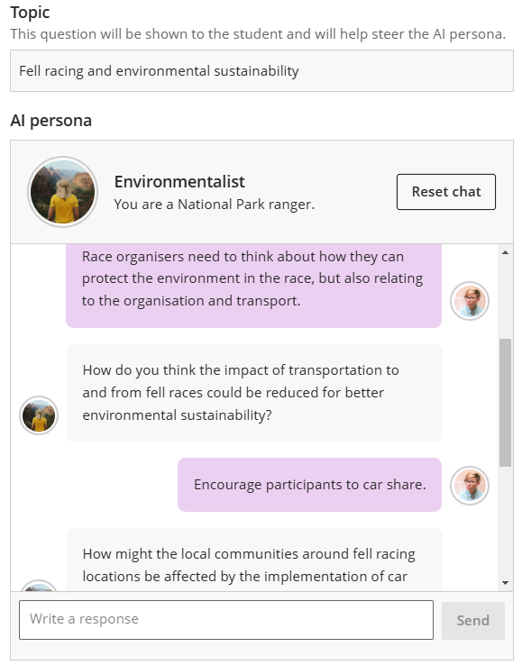
Create an AI conversation
- In the relevant location in your course, click the plus icon then Create.
- Click AI Conversation under Participation and Engagement.
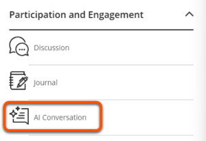
- Step 1: Conversation type
Select the Conversation type then click Next.
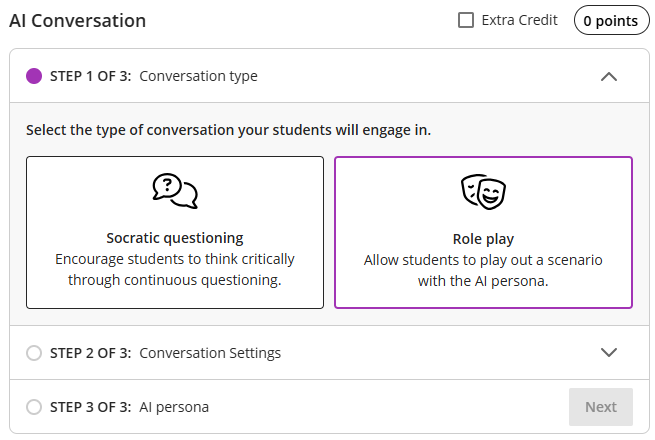
- Step 2: Conversation settings
Input Student instructions for the conversation. For Socratic questioning enter a clear, open-ended question, and for a Role play describe the situation, roles and the goal of the conversation. If desried, click Conversation constraints and enter a maximum number of messages allowed. Click Next. This information is shown to students.
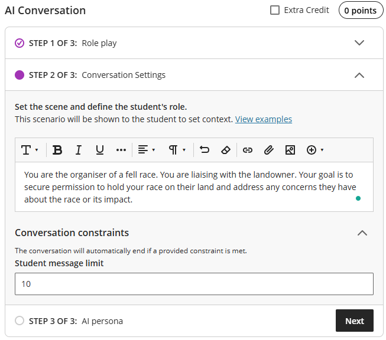
- Step 3: AI persona
Choose a suitable image, enter a name and describe the personality and give any instructions. Use the slider to adjust the complexity of responses. Click Save. The personality and instructions are not shown to students. See the Tips for generating appropriate AI responses section for more details.
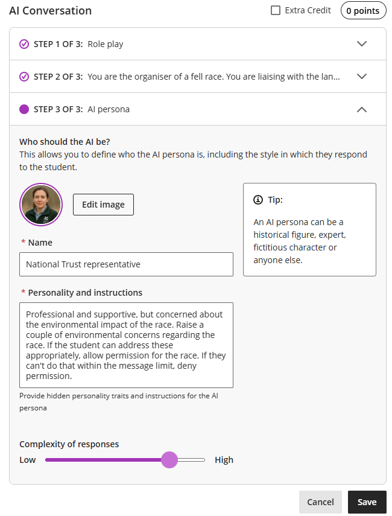
- If desired, click the three dots icon adjacent to Reflection Question to edit the question wording.
- Click Preview chat to make sure that the AI responds appropriately. If needed, click the three dots icon adjacent to AI Conversation to edit the instructions and persona and repeat.
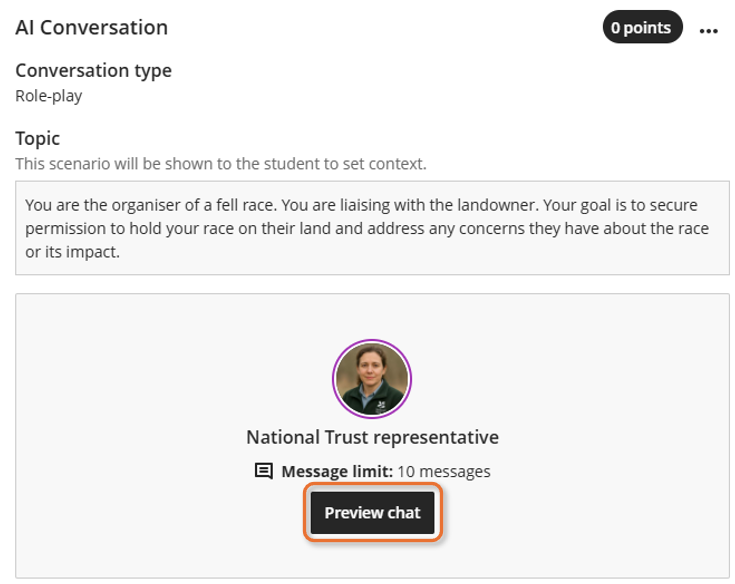
- Adjust the remaining conversation settings:
- Enter a conversation title at the top of the screen.
- Click the cog icon to open the full settings and adjust for your needs (see the Assessment & AI Conversations section for suggested settings). Click Save.
- If needed, click the points pill to adjust the marks awarded (default: 0 marks for the conversation, 1 mark for the reflection)
- Set an appropriate content visibility.
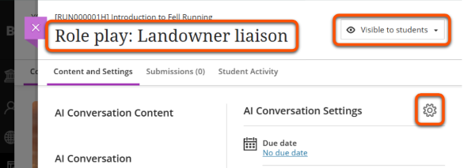
AI conversation: interface and examples
Title: Role Play: Landowner liaison
Step 1 of 3: Conversation type
- Instructions: Select the type of conversation your students will engage in.
- Type selected: Role play
Step 2 of 3: Conversation settings
Define conversation
- Instructions: Set the scene and define the student's role. This scenario will be shown to the student to set context. Describe the scenario, the student's role and what they're trying to achieve in the scenario.
- Scenario description: You are the organiser of a fell race. You are liaising with the landowner. Your goal is to secure permission to hold your race on their land and address any concerns they have about the race or its impact.
Conversation constraints; student message limit
- Instructions: The conversation will automatically end if a provided constraint is met.#
- Enter maximum number of students messages (10 for this example)
Step 3 of 3: AI persona
- Instructions for this step: Who should the AI be? This allows you to define who the AI persona is, including the style in which they respond to the student. An AI persona can be a historical figure, expert, fictitious character or anyone else. Slider to set complexity.
- Persona description:
- Name: National Trust representative
- Personality trait: Professional and supportive, but concerned about the environmental impact of the race. Raise a couple of environmental concerns regarding the race. If the student can address these appropriately, allow permission for the race. If they can't do that within the message limit, deny permission.
- Complexity of responses: 8/10
Once the three setps are saved, an option becomes available to preview the chat.
Reflection Question: In what ways did the conversation advance your understanding of the topic?
Settings
- No due date
- flagged as Formative Tools
- Mark category: Assignment
- Marking: complete/incomplete, 1 maximum point, manually post marks
- Attempts allowed: unlimited
- Description: This task is for your own practice and will not be marked
Generate using AI
Using AI tools effectively
AI-generated content is a starting point for your own content development rather than a finished product. Particularly check that the AI persona matches the situation and persona image.
You can also use the AI Design Assistant to generate the AI conversation scenario and persona:
- Follow the steps above to create a new AI conversation.
- On your new conversation, click the magic AI icon in the top right. On a larger screen you'll also see Auto-generate conversation.
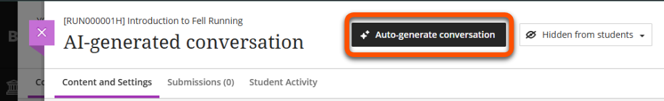
- Optionally, define the conversation:
- Enter a Description and/or Select course items to help generate more relevant content.
- Select a Conversation type, or choose Inspire me! for a mix of types.
- Adapt other settings to your needs.
- Click Generate.
- Review the three generated conversations and select which to keep. If you want to keep more than one, copy/paste it into another document to use later. Click Add to Course.
- Edit or adapt the AI-generated content as needed and click Preview chat to make sure that the AI responds appropriately.
- Adjust the remaining conversation settings as described in the final step for creating AI conversations above.
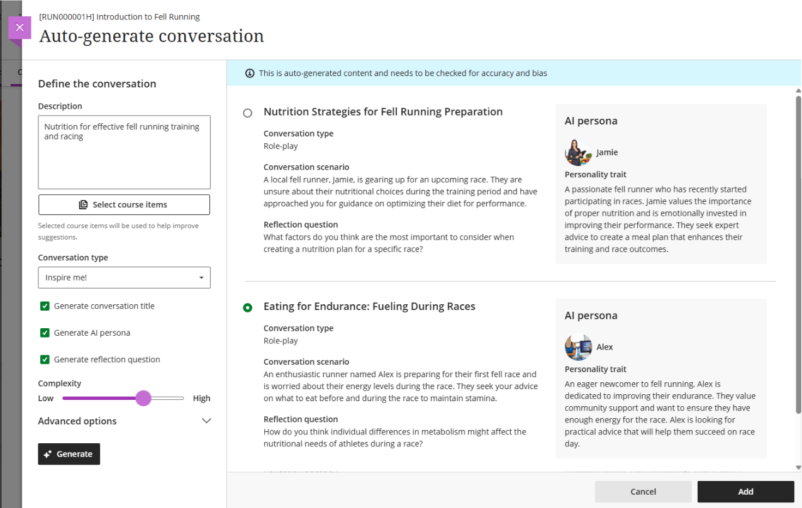
AI conversation: generate using AI Design Assistant
Settings to define the conversation
- Description: Nutrition for effective fell running training and racing
- Conversation type: Inspire Me!
- Generate options: conversation title, AI persona, reflection questions
- Complexity: 7/10
Generated conversation 1: Nutrition Strategies for Fell Running Preparation
- Conversation type: Role-play
- Conversation scenario: A local fell runner, Jamie, is gearing up for an upcoming race. They are unsure about their nutritional choices during the training period and have approached you for guidance on optimizing their diet for performance.
- AI persona: Jamie
- Personality trait: A passionate fell runner who has recently started participating in races. Jamie values the importance of proper nutrition and is emotionally invested in improving their performance. They seek expert advice to create a meal plan that enhances their training and race outcomes.
- Reflection question: What factors do you think are the most important to consider when creating a nutrition plan for a specific race?
Generated conversation 2: Eating for Endurance: Fueling During Races
- Conversation type: Role-play
- Conversation scenario: An enthusiastic runner named Alex is preparing for their first fell race and is worried about their energy levels during the race. They seek your advice on what to eat before and during the race to maintain stamina.
- AI persona: Alex
- Personality trait: An eager newcomer to fell running, Alex is dedicated to improving their endurance. They value community support and want to ensure they have enough energy for the race. Alex is looking for practical advice that will help them succeed on race day.
- Reflection question: How do you think individual differences in metabolism might affect the nutritional needs of athletes during a race?
(Conversation 3 not pictured)
Marking & feedback
If you have chosen to mark the AI conversations, this is done in the same way as marking Ultra Assignments.
The only difference is that you can assign a mark for the conversation and reflective question (labelled Essay) components separately, according to the maximum marks you set.
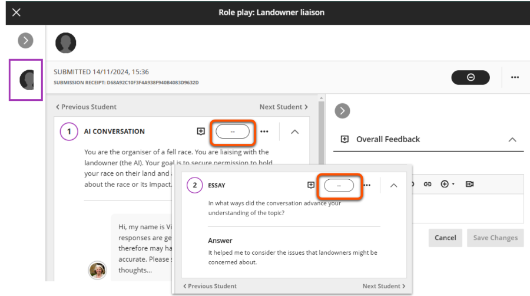